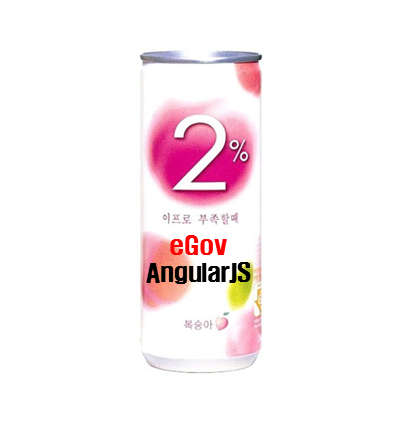
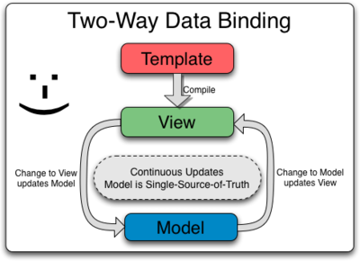
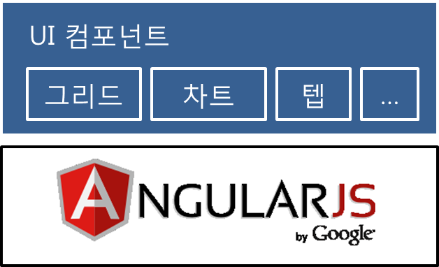

eGovAngularJS
UI 개발을 쉽게
표준프레임워크에 2% 부족함을 채우다.

http://14.63.199.244:8080/guruguru/
ActiveX 기술 없이 모든 브라우저 동작?!
UI 솔루션 살 돈도 없다?!
매번 다른 말을 하는 고객?!
표준웹 UI 개발은 어렵다.
-
요구사항의 변경이 심하다!
-
개발자 vs 기획자 vs 디자이너는 맨날 싸운다!
-
기능이 많아 질 수록 코드가 복잡하다!
eGovAngularJS

양방향 데이터 바인딩
jQuery 예제
위의 체크박스를 클릭하면 보시는 내용은 숨겨질 것입니다.
AngularJS 예제
위의 체크박스를 클릭하면 보시는 내용은 숨겨질 것입니다.

MVC 구조 제공
다양한 UI 컴포넌트 제공
이미지 변경
아주 쉬운 UI 컴포넌트 사용
- 그리드 컴포넌트 -
이름 이메일 등록일
{{name}} {{email}} {{regDate}}
function demoCtrl ($scope) {
$scope.userList = [{
name: "재도",
email: "haibane@gmail.com",
regDate: "20130910"
},{
name: "재하",
email: "jeaha@gmail.com",
regDate: "20130910"
}, {
name: "지수",
email: "jisu@gmail.com",
regDate: "20130910"
}, {
name: "한행",
email: "hanhang@gmail.com",
regDate: "20130910"
}];
}
쉬운 UI 개발
- 차트 컴포넌트 -
개발을 쉽게 도와주는
개발자 사이트 제공

DEMO
한 가지 더!
Cross Browsing Test